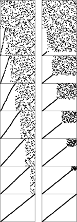
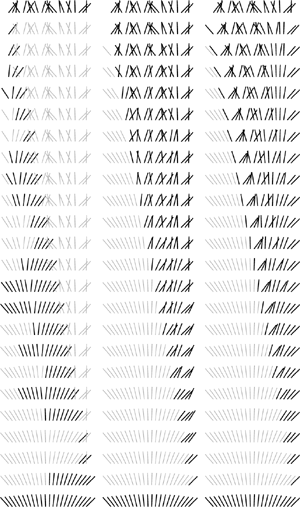
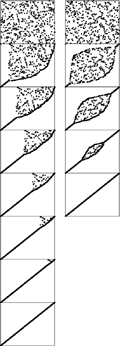

C++ Programming Robert Sedgewick - Princeton University Addison Wesley Professional Algorithms in C++, Parts 1–4: Fundamentals, Data Structure, Sorting, Searching, Third Edition C++ Programming Robert Sedgewick - Princeton University Addison Wesley Professional Algorithms in C++, Parts 1–4: Fundamentals, Data Structure, Sorting, Searching, Third Edition
6.5. Performance Characteristics of Elementary Sorts
Selection sort, insertion sort, and bubble sort are all quadratic-time algorithms both in the worst and in the average case, and none requires extra memory. Their running times thus differ by only a constant factor, but they operate quite differently, as illustrated in Figures 6.5 through 6.7.
These snapshots of insertion sort (left) and selection sort (right) in action on a random permutation illustrate how each method progresses through the sort. We represent an array being sorted by plotting i vs. a[i] for each i. Before the sort, the plot is uniformly random; after the sort, it is a diagonal line from bottom left to top right. Insertion sort never looks ahead of its current position in the array; selection sort never looks back.

This diagram highlights the differences in the way that insertion sort, selection sort, and bubble sort bring a file into order. The file to be sorted is represented by lines that are to be sorted according to their angles. Black lines correspond to the items accessed during each pass of the sort; gray lines correspond to items not touched. For insertion sort (left), the element to be inserted goes about halfway back through the sorted part of the file on each pass. Selection sort (center) and bubble sort (right) both go through the entire unsorted part of the array to find the next smallest element there for each pass; the difference between the methods is that bubble sort exchanges any adjacent out-of-order elements that it encounters, whereas selection sort just exchanges the minimum into position. The effect of this difference is that the unsorted part of the array becomes more nearly sorted as bubble sort progresses.

Standard bubble sort (left) operates in a manner similar to selection sort in that each pass brings one element into position, but it also brings some order into other parts of the array, in an asymmetric manner. Changing the scan through the array to alternate between beginning to end and end to beginning gives a version of bubble sort called shaker sort (right), which finishes more quickly (see Exercise 6.30).

Generally, the running time of a sorting algorithm is proportional to the number of comparisons that the algorithm uses, to the number of times that items are moved or exchanged, or to both. For random input, comparing the methods involves studying constant-factor differences in the numbers of comparisons and exchanges and constant-factor differences in the lengths of the inner loops. For input with special characteristics, the running times of the methods may differ by more than a constant factor. In this section, we look closely at the analytic results in support of this conclusion.
Property 6.1. Selection sort uses about N2/2 comparisons and N exchanges|
We can verify this property easily by examining the sample run in Figure 6.2, which is an N-by-N table in which unshaded letters correspond to comparisons. About one-half of the elements in the table are unshaded—those above the diagonal. The N – 1 (not the final one) elements on the diagonal each correspond to an exchange. More precisely, examination of the code reveals that, for each i from 1 to N – 1, there is one exchange and N – i comparisons, so there is a total of N – 1 exchanges and (N – 1) + (N – 2) +...+ 2 + 1 = N(N – 1)/2 comparisons. These observations hold no matter what the input data are; the only part of selection sort that does depend on the input is the number of times that min is updated. In the worst case, this quantity could also be quadratic; in the average case, however, it is just O(N log N) (see reference section), so we can expect the running time of selection sort to be insensitive to the input.
|
Property 6.2. Insertion sort uses about N2/4 comparisons and N2/4 half-exchanges (moves) on the average, and twice that many at worst|
As implemented in Program 6.3, the number of comparisons and of moves is the same. Just as for Property 6.1, this quantity is easy to visualize in the N-by-N diagram in Figure 6.3 that gives the details of the operation of the algorithm. Here, the elements below the diagonal are counted—all of them, in the worst case. For random input, we expect each element to go about halfway back, on the average, so one-half of the elements below the diagonal should be counted.
|
Property 6.3. Bubble sort uses about N2/2 comparisons and N2/2 exchanges on the average and in the worst case|
The ith bubble sort pass requires N – i compare–exchange operations, so the proof goes as for selection sort. When the algorithm is modified to terminate when it discovers that the file is sorted, the running time depends on the input. Just one pass is required if the file is already in order, but the ith pass requires N – i comparisons and exchanges if the file is in reverse order. The average-case performance is not significantly better than the worst case, as stated, although the analysis that demonstrates this fact is complicated (see reference section).
|
Although the concept of a partially sorted file is necessarily rather imprecise, insertion sort and bubble sort work well for certain types of nonrandom files that often arise in practice. General-purpose sorts are commonly misused for such applications. For example, consider the operation of insertion sort on a file that is already sorted. Each element is immediately determined to be in its proper place in the file, and the total running time is linear. The same is true for bubble sort, but selection sort is still quadratic.
Definition 6.2. An inversion is a pair of keys that are out of order in the file|
To count the number of inversions in a file, we can add up, for each element, the number of elements to its left that are greater (we refer to this quantity as the number of inversions corresponding to the element). But this count is precisely the distance that the elements have to move when inserted into the file during insertion sort. A file that has some order will have fewer inversions than will one that is arbitrarily scrambled.
In one type of partially sorted file, each item is close to its final position in the file. For example, some people sort their hand in a card game by first organizing the cards by suit, to put their cards close to their final position, then considering the cards one by one. We shall be considering a number of sorting methods that work in much the same way—they bring elements close to final positions in early stages to produce a partially sorted file with every element not far from where it ultimately must go. Insertion sort and bubble sort (but not selection sort) are efficient methods for sorting such files.
|
Property 6.4. Insertion sort and bubble sort use a linear number of comparisons and exchanges for files with at most a constant number of inversions corresponding to each element|
As just mentioned, the running time of insertion sort is directly proportional to the number of inversions in the file. For bubble sort (here, we are referring to Program 6.4, modified to terminate when the file is sorted), the proof is more subtle (see Exercise 6.29). Each bubble sort pass reduces the number of smaller elements to the right of any element by precisely 1 (unless the number was already 0), so bubble sort uses at most a constant number of passes for the types of files under consideration, and therefore does at most a linear number of comparisons and exchanges.
|
In another type of partially sorted file, we perhaps have appended a few elements to a sorted file or have edited a few elements in a sorted file to change their keys. This kind of file is prevalent in sorting applications. Insertion sort is an efficient method for such files; bubble sort and selection sort are not.
Property 6.5. Insertion sort uses a linear number of comparisons and exchanges for files with at most a constant number of elements having more than a constant number of corresponding inversions|
The running time of insertion sort depends on the total number of inversions in the file, and does not depend on the way in which the inversions are distributed.
|
To draw conclusions about running time from Property 6.1 through Property 6.5, we need to analyze the relative cost of comparisons and exchanges, a factor that in turn depends on the size of the items and keys (see Table 6.1). For example, if the items are one-word keys, then an exchange (four array accesses) should be about twice as expensive as a comparison. In such a situation, the running times of selection and insertion sort are roughly comparable, but bubble sort is slower. But if the items are large in comparison to the keys, then selection sort will be best.
Table 6.1. Empirical study of elementary sorting algorithmsInsertion sort and selection sort are about twice as fast as bubble sort for small files, but running times grow quadratically (when the file size grows by a factor of 2, the running time grows by a factor of 4). None of the methods are useful for large randomly ordered files—for example, the numbers corresponding to those in this table are less than 2 for the shellsort algorithm in Section 6.6. When comparisons are expensive—for example, when the keys are strings—then insertion sort is much faster than the other two because it uses many fewer comparisons. Not included here is the case where exchanges are expensive; then selection sort is best. | | | 32-bit integer keys | string keys | N | S | I* | I | B | B* | S | I | B | 1000 | 5 | 7 | 4 | 11 | 8 | 13 | 8 | 19 | 2000 | 21 | 29 | 15 | 45 | 34 | 56 | 31 | 78 | 4000 | 85 | 119 | 62 | 182 | 138 | 228 | 126 | 321 | Key:
S Selection sort (Program 6.2)
|
I* Insertion sort, exchange-based (Program 6.1) I Insertion sort (Program 6.3) B Bubble sort (Program 6.4) B* Shaker sort (Exercise 6.30) |